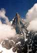

Bill's Climbing Page
Photo
gallery: Climbing, hiking, and general mountain images from various
trips.
Links:
With the exception of some New Mexico specific information, I am only providing
links to a few of the many comprehensive pages of climbing links.
Climbing in general:
New Mexico Climbing:
| Return to Bill Ryan's homepage|